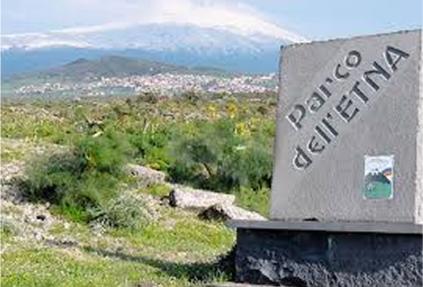
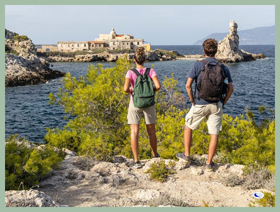

Guida ai parchi nazionali,
riserve naturali e aree protette
Biodiversità, paesaggi, tradizioni, natura, cultura.I parchi
naturali italiani sono un tesoro di ecosistemi ricchi,
paesaggi
mozzafiato e unici legami tra uomo e ambiente. Scopri flora, fauna e
le storie che rendono speciale ogni angolo
protetto del nostro Paese.

Parco dell'etna

Attività ed Esperienze
I parchi naturali italiani offrono
esperienze uniche per esplorare paesaggi straordinari:
trekking panoramici, birdwatching, vulcani attivi e sentieri
immersi nella biodiversità di monti e
foreste.